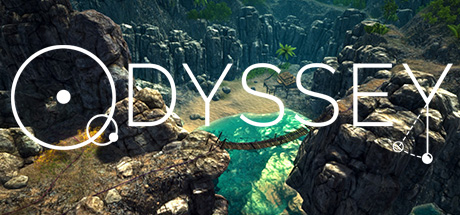

Odyssey The Invention of Science
Odyssey The Invention of Science
Details
|  | |
| Playtime | Not Played |
| Last Activity | Never |
| Added | 05.6.2021 14:09:36 |
| Modified | 06.6.2021 10:07:42 |
| Completion Status | Not Played |
| Source | Steam |
| Platform | PC |
| Release Date | 19.4.2017 |
| Community Score | 71 |
| Critic Score | |
| User Score | |
| Genre | Adventure Indie |
| Developer | The Young Socratics |
| Publisher | The Young Socratics |
| Feature | Achievements Single-Player |
| Links | Community Hub Discussions Guides News Store Page PCGamingWiki Achievements |
Description
Odyssey is a unique science adventure game where you need to navigate across a group of islands in search of a 13-year old girl Kai and her family trapped and waiting to be rescued. The game has an explicit purpose of teaching astronomy and mechanics from the ancient Greeks to Galileo. It does so by taking the player through an intellectual journey as the player is physically navigating through the islands. Gaming is seamlessly integrated with a historical approach to science and storytelling, through Kai's in-game journal from which the player learns the story and the science content, which are needed to solve the puzzles. Players can expect a significant amount of reading. The game is aligned to the Next Generation Science Standards and is ideal for middle school and high school students and for adults who like to read about science.
"Imaginative and compelling" -- Noam Chomsky, Professor Emeritus of Linguistics and Philosophy, MIT
"An extraordinary step for science education" -- Bryan Brown, Associate Professor of Science Education, Stanford University.
"An innovative historical approach to teaching science" -- Jonathan Osborne, Professor of Science Education, Stanford University
"A wonderful 21st century meld of ideas" -- David Mumford, Fields Medalist, National Medal of Science Winner and Professor Emeritus at Brown and Harvard Universities
Details:
Drawn to one of the remote and uninhabited Wretched islands (in the Caribbean) by the distress call of 13- year old Kai, you find that all across the islands are barricades set up by her family, who are expecting a small group of unscrupulous sailors (pirates) to return to haunt them on the islands. At the same time, the family wants to allow rescuers to reach them. So while they expect the barricades to keep away the pirates at least for some time, they hope that a rescuer would be able to get through, with the help of clues planted by Kai inside fragments of text that the player would find scattered across the islands.
These fragments are pages from her journal that she wrote during her stay on the uninhabited islands, while her archaeologist Dad worked hard to excavate valuable Carib artifacts from the islands. She not only recorded the events that happened in her journal, but also her intellectual journey across 2000 years of astronomy and physics through Socratic dialogues with Dad, and her own observations and experiments guided by those conversations. She and her brother Sid also build a number of physical models as she debates, critiques and argues for her point of view with Dad. All of that is recorded in her journal.
But after a few unpleasant encounters with some nosy sailors, the last of which leaves the family stranded on the islands with their boat and radio smashed, and only a few days of time given to them to turn in all the valuable artifacts (including treasure) that the sailors believe Dad has found, they decide to plant barricades all over the islands to buy some time, since Dad's graduate students are expected to arrive within a month. To leave them clues about how to solve the puzzles, Kai tears up her journal and plants fragments all over the islands, so that the fragment in each place has clues relevant to the puzzle at that place.
The puzzles are arranged in a sequence that mirrors the chronological progression of ideas in astronomy and mechanics. So the player would be learning the history of astronomy and mechanics in a systematic sequence as he/she navigates through the islands.
The first game which is being released in Early Access covers Chapters 1-3 of the adventure.
Chapter 1 covers the origins of science, and the shift from the flat earth of the Pre-socratics to the spherical earth and physics of Aristotle.
Chapter 2 covers the shift from the geocentric universe of Ptolemy to the heliocentric universe of Copernicus and Galileo.
Chapter 3 covers the tussle between Galileo and the followers of Aristotle on free fall motion.
The third chapter ends midway through Galileo's physics and we plan to continue the story in a sequel game, which would cover the following chapters:
Chapter 4 would cover the mathematics of uniformly accelerated motion as developed by Galileo (1D kinematics).
Chapter 5 would cover Galileo's ideas about inertia and the mathematics of projectile motion (2D kinematics) .
Chapter 6 would complete the birth of a new physics with the construction of the three Laws of Motion and Universal Gravitation by Newton.
Meant for ages 11+.
"Imaginative and compelling" -- Noam Chomsky, Professor Emeritus of Linguistics and Philosophy, MIT
"An extraordinary step for science education" -- Bryan Brown, Associate Professor of Science Education, Stanford University.
"An innovative historical approach to teaching science" -- Jonathan Osborne, Professor of Science Education, Stanford University
"A wonderful 21st century meld of ideas" -- David Mumford, Fields Medalist, National Medal of Science Winner and Professor Emeritus at Brown and Harvard Universities
Details:
Drawn to one of the remote and uninhabited Wretched islands (in the Caribbean) by the distress call of 13- year old Kai, you find that all across the islands are barricades set up by her family, who are expecting a small group of unscrupulous sailors (pirates) to return to haunt them on the islands. At the same time, the family wants to allow rescuers to reach them. So while they expect the barricades to keep away the pirates at least for some time, they hope that a rescuer would be able to get through, with the help of clues planted by Kai inside fragments of text that the player would find scattered across the islands.
These fragments are pages from her journal that she wrote during her stay on the uninhabited islands, while her archaeologist Dad worked hard to excavate valuable Carib artifacts from the islands. She not only recorded the events that happened in her journal, but also her intellectual journey across 2000 years of astronomy and physics through Socratic dialogues with Dad, and her own observations and experiments guided by those conversations. She and her brother Sid also build a number of physical models as she debates, critiques and argues for her point of view with Dad. All of that is recorded in her journal.
But after a few unpleasant encounters with some nosy sailors, the last of which leaves the family stranded on the islands with their boat and radio smashed, and only a few days of time given to them to turn in all the valuable artifacts (including treasure) that the sailors believe Dad has found, they decide to plant barricades all over the islands to buy some time, since Dad's graduate students are expected to arrive within a month. To leave them clues about how to solve the puzzles, Kai tears up her journal and plants fragments all over the islands, so that the fragment in each place has clues relevant to the puzzle at that place.
The puzzles are arranged in a sequence that mirrors the chronological progression of ideas in astronomy and mechanics. So the player would be learning the history of astronomy and mechanics in a systematic sequence as he/she navigates through the islands.
The first game which is being released in Early Access covers Chapters 1-3 of the adventure.
Chapter 1 covers the origins of science, and the shift from the flat earth of the Pre-socratics to the spherical earth and physics of Aristotle.
Chapter 2 covers the shift from the geocentric universe of Ptolemy to the heliocentric universe of Copernicus and Galileo.
Chapter 3 covers the tussle between Galileo and the followers of Aristotle on free fall motion.
The third chapter ends midway through Galileo's physics and we plan to continue the story in a sequel game, which would cover the following chapters:
Chapter 4 would cover the mathematics of uniformly accelerated motion as developed by Galileo (1D kinematics).
Chapter 5 would cover Galileo's ideas about inertia and the mathematics of projectile motion (2D kinematics) .
Chapter 6 would complete the birth of a new physics with the construction of the three Laws of Motion and Universal Gravitation by Newton.
Meant for ages 11+.